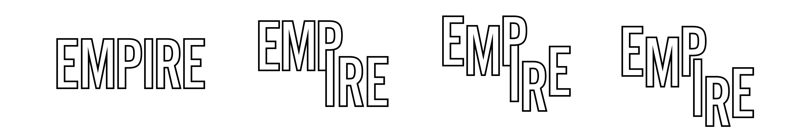

Calling
User Experience & Visual Design • Branding

In an effort to make volunteering easier, I designed a system that would allow volunteers to be easily matched with organizations they would identify with. Calling facilitates the entire process, from discovery, all the way to application and on-boarding.
Empire
User Experience & Visual Design • Copywriting • Branding
In a previous life, believe it or not, I made pies. Empire was the name of my business, not only named after the apple, but also named after my hopes of being the ultimate grand supreme of the Toronto pie scene (yes, there’s a Toronto pie scene). Ultimately, Empire never took off, but it left us with a beautiful interface, rich with tasty interactions and imagery.
Persona Illustrations